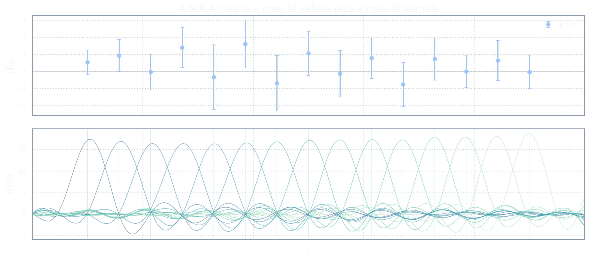

The Target Is the Request, the Resolving Kernel Is the Answer
The approximate property map
We have now built the standard SOLA machinery. We have a forward map \(G:\M\to\D,\) a property map \(\Tau:\M\to\Pspace,\) and a finite-dimensional SOLA matrix \(\mathbf X:\D\to\Pspace.\) The defining idea was to choose \(\mathbf X\) so that \(\mathbf XG\approx \Tau.\)
This composite map deserves its own name. We define \[\mathcal{A}:=\mathbf XG:\M\to\Pspace.\] The map \(\mathcal{A}\) is the approximate property map synthesized from the data.
This notation is small, but the conceptual shift is large. The target map is \(\Tau\). The map SOLA actually constructs is \(\mathcal{A}\). These are not the same object unless the resolving kernels exactly reproduce the target kernels.
For a model \(m\), the desired property vector is \(\mathbf p=\Tau(m).\) The SOLA-accessible property vector, in the noiseless setting, is \(\mathcal{A}(m)=\mathbf XG(m).\)
So there are two property maps in the room: \[\Tau:\M\to\Pspace, \qquad \mathcal{A}:\M\to\Pspace.\] The first one is what we asked for. The second one is what the data combination actually gives.
The target map \(\Tau\) is the question written on the wish list. The approximate map \(\mathcal{A}=\mathbf XG\) is the question the data can actually answer after SOLA has reshuffled them.
At the kernel level, this means the following. The \(k\)th component of the target property is represented by the target kernel \(T_k\): \[[\Tau(m)]_k = (T_k,m)_{\M}.\] The \(k\)th component of the approximate property map is represented by the resolving kernel \(R_k\): \[[\mathcal{A}(m)]_k = (R_k,m)_{\M}.\] The resolving kernel is built from the sensitivity kernels: \[R_k = \sum_{i=1}^{N_d}[\mathbf X]_{ki}K_i.\]
Thus SOLA produces the kernels \(R_k\), not merely the numbers \([\widetilde{\mathbf p}]_k\). Those kernels are the actual lenses through which the model is being viewed.
Once \(\mathbf X\) has been chosen, SOLA has chosen a new property map \(\mathcal{A}=\mathbf XG\). The reported numbers should be interpreted through \(\mathcal{A}\), not automatically through \(\Tau\).
The target property and the SOLA property
Let \(\bar m\in\M\) denote the true model. The true target property vector is \(\bar{\mathbf p} := \Tau(\bar m).\) Its components are \([\bar{\mathbf p}]_k = [\Tau(\bar m)]_k = (T_k,\bar m)_{\M}.\)
Now ignore noise for a moment. If the data were exact, then \(\mathbf d=G(\bar m).\) Applying the SOLA matrix gives \[\widetilde{\mathbf p} = \mathbf X\mathbf d = \mathbf XG(\bar m) = \mathcal{A}(\bar m).\] So the noiseless SOLA output is \(\widetilde{\mathbf p}=\mathcal{A}(\bar m).\)
The desired target property is \(\bar{\mathbf p}=\Tau(\bar m).\) Therefore the basic distinction is \[\mathcal{A}(\bar m) \quad\text{versus}\quad \Tau(\bar m).\] This is the interpretive fork in the road.
If \(\mathcal{A}=\Tau\), then the SOLA property is exactly the target property: \(\mathcal{A}(\bar m)=\Tau(\bar m).\) In that case, there is no ambiguity.
But if \(\mathcal{A}\neq \Tau\), then the SOLA output and the target property are generally different: \(\mathcal{A}(\bar m)\neq \Tau(\bar m).\)
In components, \[[\widetilde{\mathbf p}]_k = [\mathcal{A}(\bar m)]_k = (R_k,\bar m)_{\M},\] whereas the desired target component is \[[\bar{\mathbf p}]_k = [\Tau(\bar m)]_k = (T_k,\bar m)_{\M}.\] So the difference is \[[\bar{\mathbf p}]_k-[\widetilde{\mathbf p}]_k = (T_k-R_k,\bar m)_{\M}.\]
The SOLA output is exact for the resolving kernel, not automatically for the target kernel. If \(R_k\neq T_k\), then the two linear questions are different.
This is not a failure of SOLA. It is the method telling us precisely what it managed to build. The danger begins only when we forget the distinction and read \(\mathcal{A}(\bar m)\) as though it were \(\Tau(\bar m).\)
Why kernel closeness is not enough
A tempting thought now appears: \[\text{if }\mathcal{A}\text{ is close to }\Tau,\text{ then }\mathcal{A}(\bar m)\text{ should be close to }\Tau(\bar m).\] This sounds reasonable, and in many practical situations it may be a useful heuristic. But as a mathematical statement, it is missing a crucial ingredient.
The difference between the true target property and the SOLA-accessible property is \[\Tau(\bar m)-\mathcal{A}(\bar m) = (\Tau-\mathcal{A})(\bar m).\] Taking norms gives \[\|\Tau(\bar m)-\mathcal{A}(\bar m)\|_{\Pspace} = \|(\Tau-\mathcal{A})(\bar m)\|_{\Pspace}.\] Using the operator norm, \[\|\Tau(\bar m)-\mathcal{A}(\bar m)\|_{\Pspace} \le \|\Tau-\mathcal{A}\|_{\M\to\Pspace}\,\|\bar m\|_{\M}.\]
This inequality is useful, but it does not say what one might first hope. It says that the property error is controlled by two things: \[\text{resolving-target mismatch} \quad\text{and}\quad \text{size of the true model}.\]
If \(\|\bar m\|_{\M}\) is controlled, then a small operator mismatch gives a small property error. For example, if we know in advance that \(\|\bar m\|_{\M}\le B,\) then \[\|\Tau(\bar m)-\mathcal{A}(\bar m)\|_{\Pspace} \le B\|\Tau-\mathcal{A}\|_{\M\to\Pspace}.\] That is a genuine error bound.
But without such a model-side restriction, there is no uniform guarantee.
Indeed, suppose \(\Tau-\mathcal{A}\neq 0.\) Then there exists some direction \(h\in\M\) such that \((\Tau-\mathcal{A})(h)\neq \mathbf 0.\) For any scalar \(\alpha\), consider the model \(m_\alpha=\alpha h.\) Then \[\Tau(m_\alpha)-\mathcal{A}(m_\alpha) = \alpha(\Tau-\mathcal{A})(h).\] Therefore \[\|\Tau(m_\alpha)-\mathcal{A}(m_\alpha)\|_{\Pspace} = |\alpha|\,\|(\Tau-\mathcal{A})(h)\|_{\Pspace}.\] By taking \(|\alpha|\) large enough, the property mismatch can be made arbitrarily large, even though the operator mismatch \(\|\Tau-\mathcal{A}\|\) has not changed.
A small mismatch between resolving and target kernels is not a model-independent error bound. It becomes an error bound only after the model class has been restricted.
This point is subtle because plots of kernels can be persuasive. If \(R_k\) visually resembles \(T_k\), it is natural to feel that the corresponding properties must be close. But the model is what multiplies the difference: \[[\Tau(\bar m)]_k-[\mathcal{A}(\bar m)]_k = (T_k-R_k,\bar m)_{\M}.\] A tiny kernel mismatch can matter a lot if the true model has large structure in exactly that mismatch direction.
Kernel mismatch is the crack. The true model decides how much water flows through it.
This is the first major limitation that must be stated carefully. SOLA gives us control over the resolving kernels, and that control is valuable. But closeness of resolving kernels to target kernels is not, by itself, a guarantee that the target properties of the true model have been estimated accurately.
To get such a guarantee, one needs additional information about the true model. That information may be a norm bound, a smoothness class, a deterministic admissible set, a probabilistic prior, or some other model-side restriction. Without it, the data cannot rule out all directions that matter to \(\Tau-\mathcal{A}\).
The statement \(\mathcal{A}\approx\Tau\) is a statement about operators or kernels. To turn it into a statement about \(\mathcal{A}(\bar m)\approx\Tau(\bar m)\), we need some control of \(\bar m\).
The Honest Sidestep
Interpreting through resolving kernels
There is a clean way to avoid overclaiming.
Do not pretend that the resolving kernel is the target kernel. Interpret the result through the resolving kernel itself.
The SOLA output is \(\widetilde{\mathbf p} = \mathbf X\widetilde{\mathbf d}.\) Ignoring observational noise for the moment, \(\widetilde{\mathbf p} = \mathcal{A}(\bar m).\) Therefore the \(k\)th component is \[[\widetilde{\mathbf p}]_k = [\mathcal{A}(\bar m)]_k = (R_k,\bar m)_{\M},\] where \[R_k = \sum_{i=1}^{N_d}[\mathbf X]_{ki}K_i.\]
This is not a second-rate interpretation. It is the direct interpretation of what SOLA has constructed.
If \(R_k\) is a localized, unit-mass averaging kernel, then \([\widetilde{\mathbf p}]_k\) is a localized average of the true model using that resolving kernel. If \(R_k\) is broad, then the number is a broad average. If \(R_k\) has side lobes, then the number includes those side lobes. If \(R_k\) is derivative-like, then the number should be interpreted as that derivative-like diagnostic.
The safest SOLA interpretation is not “this is the target property.” It is “this is the property defined by the resolving kernel.”
The mistake is not that SOLA gives resolving kernels. The mistake is to compute them, plot them, admire them, and then interpret the numbers as if the target kernels had been achieved exactly.
Targets as auxiliary design objects
The target kernels are still important. They guide the construction. Without them, the SOLA optimization would not know what kind of property-like quantity we want.
But target kernels should be understood as auxiliary design objects.
A target kernel \(T_k\) says: \(\text{this is the linear question I would like to ask.}\) The resolving kernel \(R_k\) says: \(\text{this is the linear question the data combination actually asks.}\)
The SOLA optimization tries to make these two questions as similar as possible, subject to the available data kernels, resolving constraints, and noise control. But the final interpretation belongs to the question actually asked.
This view makes room for a mature use of SOLA. We can still design ambitious target kernels. We can still use them to steer the calculation. We can still compare resolving kernels with targets as a diagnostic.
But when reporting the result, we should say what was actually resolved.
For example, instead of saying \([\widetilde{\mathbf p}]_k \text{ estimates } (T_k,\bar m)_{\M},\) we should say \([\widetilde{\mathbf p}]_k \text{ estimates } (R_k,\bar m)_{\M},\) and then show \(R_k\).
If \(R_k\) is close enough to \(T_k\) for the scientific purpose at hand, excellent. But that judgment depends on the model class and on the question being asked. It is not obtained from the plot alone.
The target kernel is useful for design. The resolving kernel is necessary for interpretation. Confusing those roles is where the trouble begins.
Each map point has its own kernel
This becomes especially important when SOLA is used to build a map.
Suppose we choose target kernels \(T_1,\dots,T_{N_p}\) centred at different locations. The output is a finite-dimensional vector \(\widetilde{\mathbf p}\in\Pspace,\) with components \([\widetilde{\mathbf p}]_k, \qquad k=1,\dots,N_p.\) It is tempting to plot these values as a profile or image and treat them as samples of the same kind of quantity at different locations.
But each component has its own resolving kernel: \[R_k = \sum_{i=1}^{N_d}[\mathbf X]_{ki}K_i.\] Thus each plotted value may correspond to a different average, a different width, a different side-lobe structure, and a different response to unresolved model directions.
In a good SOLA calculation, the resolving kernels may be similar enough that the map has a clean interpretation. But this has to be checked. It is not automatic.

This is particularly important near boundaries, gaps in coverage, or regions where the sensitivity kernels change character. There, resolving kernels may become broader, more asymmetric, or more oscillatory. The plotted SOLA number may still be perfectly valid, but its meaning has changed.
A SOLA map is not merely a list of numbers. It is a list of numbers together with a list of resolving kernels.
This is the honest sidestep. We do not need to claim that SOLA has recovered the exact target properties. We can say something more precise and more defensible: \[\text{SOLA estimates the resolved properties defined by }\mathcal{A}=\mathbf XG.\]
If those resolved properties are scientifically useful, then SOLA has done something valuable. If we want to go further and claim something about the exact target properties \(\Tau(\bar m),\) then we need additional assumptions about \(\bar m\). That issue will return later, when we discuss proxy models, prior information, and the difference between propagated noise and true property uncertainty.
The resolving kernel is not a diagnostic afterthought. It is part of the answer.